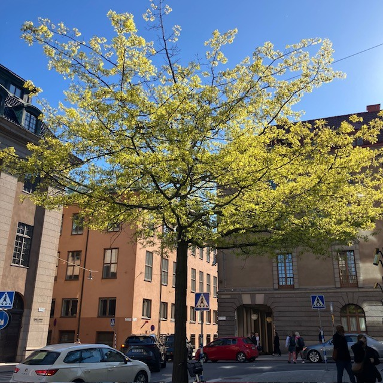

<!DOCTYPE html>
<html>
<head>
    
    <meta http-equiv="content-type" content="text/html; charset=UTF-8" />
    
        <script>
            L_NO_TOUCH = false;
            L_DISABLE_3D = false;
        </script>
    
    <style>html, body {width: 100%;height: 100%;margin: 0;padding: 0;}</style>
    <style>#map {position:absolute;top:0;bottom:0;right:0;left:0;}</style>
    <script src="https://cdn.jsdelivr.net/npm/leaflet@1.9.3/dist/leaflet.js"></script>
    <script src="https://code.jquery.com/jquery-3.7.1.min.js"></script>
    <script src="https://cdn.jsdelivr.net/npm/bootstrap@5.2.2/dist/js/bootstrap.bundle.min.js"></script>
    <script src="https://cdnjs.cloudflare.com/ajax/libs/Leaflet.awesome-markers/2.0.2/leaflet.awesome-markers.js"></script>
    <link rel="stylesheet" href="https://cdn.jsdelivr.net/npm/leaflet@1.9.3/dist/leaflet.css"/>
    <link rel="stylesheet" href="https://cdn.jsdelivr.net/npm/bootstrap@5.2.2/dist/css/bootstrap.min.css"/>
    <link rel="stylesheet" href="https://netdna.bootstrapcdn.com/bootstrap/3.0.0/css/bootstrap-glyphicons.css"/>
    <link rel="stylesheet" href="https://cdn.jsdelivr.net/npm/@fortawesome/fontawesome-free@6.2.0/css/all.min.css"/>
    <link rel="stylesheet" href="https://cdnjs.cloudflare.com/ajax/libs/Leaflet.awesome-markers/2.0.2/leaflet.awesome-markers.css"/>
    <link rel="stylesheet" href="https://cdn.jsdelivr.net/gh/python-visualization/folium/folium/templates/leaflet.awesome.rotate.min.css"/>
    
            <meta name="viewport" content="width=device-width,
                initial-scale=1.0, maximum-scale=1.0, user-scalable=no" />
            <style>
                #map_8b434c966c3e586abc6bcf416779a263 {
                    position: relative;
                    width: 100.0%;
                    height: 100.0%;
                    left: 0.0%;
                    top: 0.0%;
                }
                .leaflet-container { font-size: 1rem; }
            </style>
        
    <script src="https://cdnjs.cloudflare.com/ajax/libs/leaflet.markercluster/1.1.0/leaflet.markercluster.js"></script>
    <link rel="stylesheet" href="https://cdnjs.cloudflare.com/ajax/libs/leaflet.markercluster/1.1.0/MarkerCluster.css"/>
    <link rel="stylesheet" href="https://cdnjs.cloudflare.com/ajax/libs/leaflet.markercluster/1.1.0/MarkerCluster.Default.css"/>
</head>
<body>
    
    
<script>
function onLocationFound(e) {
    var radius = e.accuracy / 2;

    var userMarker = L.marker(e.latlng).addTo(window.map)
        .bindPopup("Du är här").openPopup();

    L.circle(e.latlng, radius).addTo(window.map);
}

function onLocationError(e) {
    alert(e.message);
}

window.map.on('locationfound', onLocationFound);
window.map.on('locationerror', onLocationError);

// Begär plats
window.map.locate({setView: true, maxZoom: 16});
</script>
    
            <div class="folium-map" id="map_8b434c966c3e586abc6bcf416779a263" ></div>
        
</body>
<script>
    
    
            var map_8b434c966c3e586abc6bcf416779a263 = L.map(
                "map_8b434c966c3e586abc6bcf416779a263",
                {
                    center: [59.3293, 18.0686],
                    crs: L.CRS.EPSG3857,
                    ...{
  "zoom": 15,
  "zoomControl": true,
  "preferCanvas": false,
}

                }
            );

            

        
    
            var tile_layer_5d589da4bd7904d6c05e49d561fa983b = L.tileLayer(
                "https://{s}.basemaps.cartocdn.com/rastertiles/voyager/{z}/{x}/{y}{r}.png",
                {
  "minZoom": 0,
  "maxZoom": 20,
  "maxNativeZoom": 20,
  "noWrap": false,
  "attribution": "CartoDB",
  "subdomains": "abcd",
  "detectRetina": false,
  "tms": false,
  "opacity": 1,
}

            );
        
    
            tile_layer_5d589da4bd7904d6c05e49d561fa983b.addTo(map_8b434c966c3e586abc6bcf416779a263);
        
    
            var marker_cluster_d4ac0b3aca5e21706035c1efcdd555e4 = L.markerClusterGroup(
                {
}
            );
        
    
            marker_cluster_d4ac0b3aca5e21706035c1efcdd555e4.addTo(map_8b434c966c3e586abc6bcf416779a263);
        
    
            var marker_c6f070ec5ccc604804f728913974a505 = L.marker(
                [59.33210074001757, 18.07150116288134],
                {
}
            ).addTo(map_8b434c966c3e586abc6bcf416779a263);
        
    
            var div_icon_3064efa04c7863dcc6461bc59096df95 = L.divIcon({
  "html": "\n        \u003cdiv style=\"background-color: #91D34C; color: white;\n                        border-radius: 50%; width: 28px; height: 28px;\n                        text-align: center; line-height: 28px;\n                        font-weight: bold;\"\u003e1\u003c/div\u003e\n        ",
  "className": "empty",
});
            marker_c6f070ec5ccc604804f728913974a505.setIcon(div_icon_3064efa04c7863dcc6461bc59096df95);
        
    
        var popup_37ad8423cb6c287aa03f840c6ae0de81 = L.popup({
  "maxWidth": 320,
});

        
            
                var html_6c5931af45227f73767a257a9bf48cff = $(`<div id="html_6c5931af45227f73767a257a9bf48cff" style="width: 100.0%; height: 100.0%;">     <div style="max-height: 500px; width: 280px; overflow-y: auto; padding: 10px;">                  <h2 style='margin-bottom: 10px;'>1. Kungsträdgården, vid dammen</h2>         <h4 style='color: darkgreen; margin-top: 0;'>Prydnadskörsbär, Prunus ’Accolade’</h4>         <div style='font-size: 15px; line-height: 1.6; text-align: justify;'>       <div style="font-family: Arial, sans-serif; font-size: 15px; line-height: 1.6; text-align: left;">      Det är inte varje dag man får promenera med huvudet i fluffiga rosa moln. Varje vår blir det en nyhet i hela landet när körsbärsträden i Kungsträdgården blommar. Stockholmare och turister vallfärdar för att fotografera denna blomsterfägring av vackert rosa, halvfyllda blommor i slutet av april.      <p>Körsbärsträden planterades 1998, i dubbla rader på båda sidorna av dammen. Träden är en hybrid mellan bergkörsbär (Prunus sargentii) och vårkörsbär (Prunus subhirtella). Den har en smalare krona i ungdomen men blir bredare med tiden, för att till slut få en nästan flat kronuppbyggnad, där grenarna hänger nedåt.</p>      <p>Andra platser i staden där du kan se prydnadskörsbär är på Luma torg i Hammarby Sjöstad.</p>      </div>      </div>         <div style="margin-top: 10px; display: flex; justify-content: center; gap: 8px; flex-wrap: wrap;">             <audio id="audio1" src="1.m4a"></audio>             <a href="javascript:document.getElementsByClassName('leaflet-marker-icon')[15].click();"               style="background-color: #91D34C; color: white; padding: 8px 12px;                       text-decoration: none; border-radius: 6px; display: inline-block;">               ← Föregående             </a>             <a href="javascript:document.getElementById('audio1').play();"               style="background-color: #FFA500; color: white; padding: 8px 12px;                       text-decoration: none; border-radius: 6px; display: inline-block;">               Lyssna             </a>             <a href="javascript:document.getElementsByClassName('leaflet-marker-icon')[1].click();"               style="background-color: #91D34C; color: white; padding: 8px 12px;                       text-decoration: none; border-radius: 6px; display: inline-block;">               Nästa →             </a>         </div>     </div>     </div>`)[0];
                popup_37ad8423cb6c287aa03f840c6ae0de81.setContent(html_6c5931af45227f73767a257a9bf48cff);
            
        

        marker_c6f070ec5ccc604804f728913974a505.bindPopup(popup_37ad8423cb6c287aa03f840c6ae0de81)
        ;

        
    
    
                marker_c6f070ec5ccc604804f728913974a505.setIcon(div_icon_3064efa04c7863dcc6461bc59096df95);
            
    
            var marker_15f3227d01cc78b85d92b1901ef55747 = L.marker(
                [59.33158633411901, 18.07190885862338],
                {
}
            ).addTo(map_8b434c966c3e586abc6bcf416779a263);
        
    
            var div_icon_9ddbcbd31fa0e25f98648dd910c3d9fe = L.divIcon({
  "html": "\n        \u003cdiv style=\"background-color: #91D34C; color: white;\n                        border-radius: 50%; width: 28px; height: 28px;\n                        text-align: center; line-height: 28px;\n                        font-weight: bold;\"\u003e2\u003c/div\u003e\n        ",
  "className": "empty",
});
            marker_15f3227d01cc78b85d92b1901ef55747.setIcon(div_icon_9ddbcbd31fa0e25f98648dd910c3d9fe);
        
    
        var popup_ed84031f53a54e6327e5b0cb219c2f70 = L.popup({
  "maxWidth": 320,
});

        
            
                var html_e3dacb8e6ee050e522539ec6c8dffd47 = $(`<div id="html_e3dacb8e6ee050e522539ec6c8dffd47" style="width: 100.0%; height: 100.0%;">     <div style="max-height: 500px; width: 280px; overflow-y: auto; padding: 10px;">                  <h2 style='margin-bottom: 10px;'>2. Kungsträdgården, vid alléerna</h2>         <h4 style='color: darkgreen; margin-top: 0;'>Skogslind, Tilia X cordata ’Rancho’, selektion av skogslind</h4>         <div style='font-size: 15px; line-height: 1.6; text-align: justify;'>       <div style="font-family: Arial, sans-serif; font-size: 15px; line-height: 1.6; text-align: left;">      Lind är det vanligaste trädet på innerstadens gator. Framför allt på grund av esplanadsystemets utbyggnad under slutet av 1800-talet, men även för att det är lättskött och klarar sig ganska bra i staden. I Kungsträdgården står lindarna i två, dubbelradiga alléer på var sida om parken – Jussi Björlings allé och Birgit Nilssons allé. Träden som står där idag planterades 1996 och 2003–2006.      <p>Benämningen cordata syftar till bladens hjärtform. Linden kan under sommaren avge så kallad honungsdagg – ett sekret som utsöndras av löss som suger växtsaft ur bladen.</p>      <p>Andra platser i staden där du kan se skogslind är på trottoaren vid Hammarby allé.</p>      </div>      </div>         <div style="margin-top: 10px; display: flex; justify-content: center; gap: 8px; flex-wrap: wrap;">             <audio id="audio2" src="2.m4a"></audio>             <a href="javascript:document.getElementsByClassName('leaflet-marker-icon')[0].click();"               style="background-color: #91D34C; color: white; padding: 8px 12px;                       text-decoration: none; border-radius: 6px; display: inline-block;">               ← Föregående             </a>             <a href="javascript:document.getElementById('audio2').play();"               style="background-color: #FFA500; color: white; padding: 8px 12px;                       text-decoration: none; border-radius: 6px; display: inline-block;">               Lyssna             </a>             <a href="javascript:document.getElementsByClassName('leaflet-marker-icon')[2].click();"               style="background-color: #91D34C; color: white; padding: 8px 12px;                       text-decoration: none; border-radius: 6px; display: inline-block;">               Nästa →             </a>         </div>     </div>     </div>`)[0];
                popup_ed84031f53a54e6327e5b0cb219c2f70.setContent(html_e3dacb8e6ee050e522539ec6c8dffd47);
            
        

        marker_15f3227d01cc78b85d92b1901ef55747.bindPopup(popup_ed84031f53a54e6327e5b0cb219c2f70)
        ;

        
    
    
                marker_15f3227d01cc78b85d92b1901ef55747.setIcon(div_icon_9ddbcbd31fa0e25f98648dd910c3d9fe);
            
    
            var marker_b076adaf38b264d8bc4ff365f7ce0cdf = L.marker(
                [59.330464464454856, 18.071962502799966],
                {
}
            ).addTo(map_8b434c966c3e586abc6bcf416779a263);
        
    
            var div_icon_f18683866fc368d06a36003af6788f5a = L.divIcon({
  "html": "\n        \u003cdiv style=\"background-color: #91D34C; color: white;\n                        border-radius: 50%; width: 28px; height: 28px;\n                        text-align: center; line-height: 28px;\n                        font-weight: bold;\"\u003e3\u003c/div\u003e\n        ",
  "className": "empty",
});
            marker_b076adaf38b264d8bc4ff365f7ce0cdf.setIcon(div_icon_f18683866fc368d06a36003af6788f5a);
        
    
        var popup_1b08f4347caf1a939b189b25cbfb5d43 = L.popup({
  "maxWidth": 320,
});

        
            
                var html_938188bbe355d58530a5e77b8639fe12 = $(`<div id="html_938188bbe355d58530a5e77b8639fe12" style="width: 100.0%; height: 100.0%;">     <div style="max-height: 500px; width: 280px; overflow-y: auto; padding: 10px;">                  <h2 style='margin-bottom: 10px;'>3. Kungsträdgården, vid Tehuset</h2>         <h4 style='color: darkgreen; margin-top: 0;'>Skogsalm, Ulmus gla bra</h4>         <div style='font-size: 15px; line-height: 1.6; text-align: justify;'>       <div style="font-family: Arial, sans-serif; font-size: 15px; line-height: 1.6; text-align: left;">      Almarna är planterade i slutet av 1800-talet som en så kallad boskée, en formellt planterad grupp av träd, ofta i rader eller geometriska mönster, som skapar ett avgränsat rum i en park. Idag står Tehuset i den cirkelformade planteringen. Almen var ett av de vanligaste stadsträden i både park- och gatumiljöer innan den allvarliga typen av almsjukan gjorde sitt intåg.      <p>Almen växer i en vasform, med en tidigt uppsplittrad krona och stora, mörkgröna, asymmetriska, sågade blad. Höstfärgen är gyllengul. De blommar på bar kvist under vårvintern med små blommor.</p>      <p>1971 planerade politikerna i Stockholm att bygga en tunnelbaneuppgång till Kungsträdgårdens tunnelbana precis där almarna står. Det blev stora protester som slutade med att almarna fick stå kvar.</p>      </div>      </div>         <div style="margin-top: 10px; display: flex; justify-content: center; gap: 8px; flex-wrap: wrap;">             <audio id="audio3" src="3.m4a"></audio>             <a href="javascript:document.getElementsByClassName('leaflet-marker-icon')[1].click();"               style="background-color: #91D34C; color: white; padding: 8px 12px;                       text-decoration: none; border-radius: 6px; display: inline-block;">               ← Föregående             </a>             <a href="javascript:document.getElementById('audio3').play();"               style="background-color: #FFA500; color: white; padding: 8px 12px;                       text-decoration: none; border-radius: 6px; display: inline-block;">               Lyssna             </a>             <a href="javascript:document.getElementsByClassName('leaflet-marker-icon')[3].click();"               style="background-color: #91D34C; color: white; padding: 8px 12px;                       text-decoration: none; border-radius: 6px; display: inline-block;">               Nästa →             </a>         </div>     </div>     </div>`)[0];
                popup_1b08f4347caf1a939b189b25cbfb5d43.setContent(html_938188bbe355d58530a5e77b8639fe12);
            
        

        marker_b076adaf38b264d8bc4ff365f7ce0cdf.bindPopup(popup_1b08f4347caf1a939b189b25cbfb5d43)
        ;

        
    
    
                marker_b076adaf38b264d8bc4ff365f7ce0cdf.setIcon(div_icon_f18683866fc368d06a36003af6788f5a);
            
    
            var marker_193e71419508452c3e95c54ff801ad60 = L.marker(
                [59.33044257393739, 18.069258836239964],
                {
}
            ).addTo(map_8b434c966c3e586abc6bcf416779a263);
        
    
            var div_icon_7396aadda2032151ab1db600c68d63f0 = L.divIcon({
  "html": "\n        \u003cdiv style=\"background-color: #91D34C; color: white;\n                        border-radius: 50%; width: 28px; height: 28px;\n                        text-align: center; line-height: 28px;\n                        font-weight: bold;\"\u003e4\u003c/div\u003e\n        ",
  "className": "empty",
});
            marker_193e71419508452c3e95c54ff801ad60.setIcon(div_icon_7396aadda2032151ab1db600c68d63f0);
        
    
        var popup_3b3c6dd9d6837d483b7ff3082c7960be = L.popup({
  "maxWidth": 320,
});

        
            
                var html_ed0ca5fa42b07d1dd9389ec9d5f72de1 = $(`<div id="html_ed0ca5fa42b07d1dd9389ec9d5f72de1" style="width: 100.0%; height: 100.0%;">     <div style="max-height: 500px; width: 280px; overflow-y: auto; padding: 10px;">                  <h2 style='margin-bottom: 10px;'>4. Jakobsgatan vid Hamburger Börs</h2>         <h4 style='color: darkgreen; margin-top: 0;'>Hybridkörsbär, Prunus X gondouinii ’Schnee’</h4>         <div style='font-size: 15px; line-height: 1.6; text-align: justify;'>       <div style="font-family: Arial, sans-serif; font-size: 15px; line-height: 1.6; text-align: left;">      Det här är ett mindre träd med en först konisk, senare brett rundad och slutligen något tillplattad krona. Det har en mycket rik blomning och blommar på bar kvist i början av maj. Blommorna är rent vita och enkla till något fyllda. Höstfärgerna är sprakande, i gult till orangerött. Träden planterades under 1990-talet.      </div>      </div>         <div style="margin-top: 10px; display: flex; justify-content: center; gap: 8px; flex-wrap: wrap;">             <audio id="audio4" src="4.m4a"></audio>             <a href="javascript:document.getElementsByClassName('leaflet-marker-icon')[2].click();"               style="background-color: #91D34C; color: white; padding: 8px 12px;                       text-decoration: none; border-radius: 6px; display: inline-block;">               ← Föregående             </a>             <a href="javascript:document.getElementById('audio4').play();"               style="background-color: #FFA500; color: white; padding: 8px 12px;                       text-decoration: none; border-radius: 6px; display: inline-block;">               Lyssna             </a>             <a href="javascript:document.getElementsByClassName('leaflet-marker-icon')[4].click();"               style="background-color: #91D34C; color: white; padding: 8px 12px;                       text-decoration: none; border-radius: 6px; display: inline-block;">               Nästa →             </a>         </div>     </div>     </div>`)[0];
                popup_3b3c6dd9d6837d483b7ff3082c7960be.setContent(html_ed0ca5fa42b07d1dd9389ec9d5f72de1);
            
        

        marker_193e71419508452c3e95c54ff801ad60.bindPopup(popup_3b3c6dd9d6837d483b7ff3082c7960be)
        ;

        
    
    
                marker_193e71419508452c3e95c54ff801ad60.setIcon(div_icon_7396aadda2032151ab1db600c68d63f0);
            
    
            var marker_1e5b73643c2901f7ae46f7712cd3e9a4 = L.marker(
                [59.33065600579097, 18.068572190779687],
                {
}
            ).addTo(map_8b434c966c3e586abc6bcf416779a263);
        
    
            var div_icon_f2595f524513ba1c1f8e0103fb221d73 = L.divIcon({
  "html": "\n        \u003cdiv style=\"background-color: #91D34C; color: white;\n                        border-radius: 50%; width: 28px; height: 28px;\n                        text-align: center; line-height: 28px;\n                        font-weight: bold;\"\u003e5\u003c/div\u003e\n        ",
  "className": "empty",
});
            marker_1e5b73643c2901f7ae46f7712cd3e9a4.setIcon(div_icon_f2595f524513ba1c1f8e0103fb221d73);
        
    
        var popup_7f8163ad8e18ba6ecc7bbb8c584be791 = L.popup({
  "maxWidth": 320,
});

        
            
                var html_c3272fd6f0b0eeea1c8e5747da6dd900 = $(`<div id="html_c3272fd6f0b0eeea1c8e5747da6dd900" style="width: 100.0%; height: 100.0%;">     <div style="max-height: 500px; width: 280px; overflow-y: auto; padding: 10px;">                  <h2 style='margin-bottom: 10px;'>5. Regeringsgatan, mittemot Gallerian</h2>         <h4 style='color: darkgreen; margin-top: 0;'>Mannaask, Fraxinus ornus</h4>         <div style='font-size: 15px; line-height: 1.6; text-align: justify;'>       <div style="font-family: Arial, sans-serif; font-size: 15px; line-height: 1.6; text-align: left;">      I de upphöjda betongkaren på Regeringsgatan planterades mannaaskar i mitten av 1970-talet. Detta lilla och långsamt växande träd har en god förmåga att klara av knappa förhållanden och är friskt grön i färgen. Kronan är samlad och har en rund till oval form. Höstfärgen är gul. I juni blommar träden generöst med vita plymer. Den kåda som utvinns ur träden i odlingar i Sydeuropa används som ett laxermedel, och skiljer sig från den manna som omnämns i andra sammanhang.      <p>Andra platser i staden där du kan se mannaask är på Brunkebergstorg vid Riksbanken och på Mäster Samuelsgatan.</p>      </div>      </div>         <div style="margin-top: 10px; display: flex; justify-content: center; gap: 8px; flex-wrap: wrap;">             <audio id="audio5" src="5.m4a"></audio>             <a href="javascript:document.getElementsByClassName('leaflet-marker-icon')[3].click();"               style="background-color: #91D34C; color: white; padding: 8px 12px;                       text-decoration: none; border-radius: 6px; display: inline-block;">               ← Föregående             </a>             <a href="javascript:document.getElementById('audio5').play();"               style="background-color: #FFA500; color: white; padding: 8px 12px;                       text-decoration: none; border-radius: 6px; display: inline-block;">               Lyssna             </a>             <a href="javascript:document.getElementsByClassName('leaflet-marker-icon')[5].click();"               style="background-color: #91D34C; color: white; padding: 8px 12px;                       text-decoration: none; border-radius: 6px; display: inline-block;">               Nästa →             </a>         </div>     </div>     </div>`)[0];
                popup_7f8163ad8e18ba6ecc7bbb8c584be791.setContent(html_c3272fd6f0b0eeea1c8e5747da6dd900);
            
        

        marker_1e5b73643c2901f7ae46f7712cd3e9a4.bindPopup(popup_7f8163ad8e18ba6ecc7bbb8c584be791)
        ;

        
    
    
                marker_1e5b73643c2901f7ae46f7712cd3e9a4.setIcon(div_icon_f2595f524513ba1c1f8e0103fb221d73);
            
    
            var marker_223ef73c433930c6cba6cba6a7c85030 = L.marker(
                [59.330171677731, 18.067939189495995],
                {
}
            ).addTo(map_8b434c966c3e586abc6bcf416779a263);
        
    
            var div_icon_3e033bb30a58fb1c60124e0d5d3b446f = L.divIcon({
  "html": "\n        \u003cdiv style=\"background-color: #91D34C; color: white;\n                        border-radius: 50%; width: 28px; height: 28px;\n                        text-align: center; line-height: 28px;\n                        font-weight: bold;\"\u003e6\u003c/div\u003e\n        ",
  "className": "empty",
});
            marker_223ef73c433930c6cba6cba6a7c85030.setIcon(div_icon_3e033bb30a58fb1c60124e0d5d3b446f);
        
    
        var popup_314ce5956405d43874ede53c46e7c5a3 = L.popup({
  "maxWidth": 320,
});

        
            
                var html_d279eddc7ba9d5893765f00fd401972a = $(`<div id="html_d279eddc7ba9d5893765f00fd401972a" style="width: 100.0%; height: 100.0%;">     <div style="max-height: 500px; width: 280px; overflow-y: auto; padding: 10px;">                  <h2 style='margin-bottom: 10px;'>6. Jakobsgatan, utanför Gallerian</h2>         <h4 style='color: darkgreen; margin-top: 0;'>Kärrek, Quercus palustris</h4>         <div style='font-size: 15px; line-height: 1.6; text-align: justify;'>       <div style="font-family: Arial, sans-serif; font-size: 15px; line-height: 1.6; text-align: left;">      Unga kärrekar har en spikrak, genomgående stam och en konisk kronform. Med tiden breder kronan ut sig och de nedersta grenarna får ett hängande växtsätt. Bladen är djupflikiga och klargrönt glänsande, och får vackra höstfärger. Träden producerar rikligt med ekollon.      <p>Kärrekarna på Jakobsgatan planterades under slutet av 1990-talet.</p>      <p>Andra platser i staden där du kan hitta kärrek är på Eastmanvägen och Olivecronas väg i Sabbatsbergsområdet, där kärrekarna växer så det knakar. Du kan också se kärrekar i Järnvägsparken, bredvid Tegelbacken. De träden har flyttats från Malmtorgsgatan och står i en grupp om fem träd och en solitärt. I Kista dominerar kärreken bland gatuträden.</p>      </div>      </div>         <div style="margin-top: 10px; display: flex; justify-content: center; gap: 8px; flex-wrap: wrap;">             <audio id="audio6" src="6.m4a"></audio>             <a href="javascript:document.getElementsByClassName('leaflet-marker-icon')[4].click();"               style="background-color: #91D34C; color: white; padding: 8px 12px;                       text-decoration: none; border-radius: 6px; display: inline-block;">               ← Föregående             </a>             <a href="javascript:document.getElementById('audio6').play();"               style="background-color: #FFA500; color: white; padding: 8px 12px;                       text-decoration: none; border-radius: 6px; display: inline-block;">               Lyssna             </a>             <a href="javascript:document.getElementsByClassName('leaflet-marker-icon')[6].click();"               style="background-color: #91D34C; color: white; padding: 8px 12px;                       text-decoration: none; border-radius: 6px; display: inline-block;">               Nästa →             </a>         </div>     </div>     </div>`)[0];
                popup_314ce5956405d43874ede53c46e7c5a3.setContent(html_d279eddc7ba9d5893765f00fd401972a);
            
        

        marker_223ef73c433930c6cba6cba6a7c85030.bindPopup(popup_314ce5956405d43874ede53c46e7c5a3)
        ;

        
    
    
                marker_223ef73c433930c6cba6cba6a7c85030.setIcon(div_icon_3e033bb30a58fb1c60124e0d5d3b446f);
            
    
            var marker_5bd74bb17cfed8a28a37177f1f5f878b = L.marker(
                [59.33005948775691, 18.067386654418506],
                {
}
            ).addTo(map_8b434c966c3e586abc6bcf416779a263);
        
    
            var div_icon_e0ce9a62b5b8c18d53a9e9ccb80a1e90 = L.divIcon({
  "html": "\n        \u003cdiv style=\"background-color: #91D34C; color: white;\n                        border-radius: 50%; width: 28px; height: 28px;\n                        text-align: center; line-height: 28px;\n                        font-weight: bold;\"\u003e7\u003c/div\u003e\n        ",
  "className": "empty",
});
            marker_5bd74bb17cfed8a28a37177f1f5f878b.setIcon(div_icon_e0ce9a62b5b8c18d53a9e9ccb80a1e90);
        
    
        var popup_661a857921730fab35cce6db2485214e = L.popup({
  "maxWidth": 320,
});

        
            
                var html_f34aca0d4ab030613f2620d933dcca2e = $(`<div id="html_f34aca0d4ab030613f2620d933dcca2e" style="width: 100.0%; height: 100.0%;">     <div style="max-height: 500px; width: 280px; overflow-y: auto; padding: 10px;">                  <h2 style='margin-bottom: 10px;'>7. Jakobsgatan, korsningen Malmtorgsgatan</h2>         <h4 style='color: darkgreen; margin-top: 0;'>Papegojbuske, Parrotia persica</h4>         <div style='font-size: 15px; line-height: 1.6; text-align: justify;'>       <div style="font-family: Arial, sans-serif; font-size: 15px; line-height: 1.6; text-align: left;">      Papegojbusken är trots sitt namn egentligen ett mindre träd, som kan bli upp till tio meter högt. Dessa träd får en fantastisk höstfärg i orange, rött och lila. Finast färger får trädet på en varm växtplats och efter en varm sommar.      <p>Träden planterades 2019.</p>      <p>Andra platser i staden där du kan se papegojbuske är på Medevigatan och Luntmakargatan.</p>      </div>      </div>         <div style="margin-top: 10px; display: flex; justify-content: center; gap: 8px; flex-wrap: wrap;">             <audio id="audio7" src="7.m4a"></audio>             <a href="javascript:document.getElementsByClassName('leaflet-marker-icon')[5].click();"               style="background-color: #91D34C; color: white; padding: 8px 12px;                       text-decoration: none; border-radius: 6px; display: inline-block;">               ← Föregående             </a>             <a href="javascript:document.getElementById('audio7').play();"               style="background-color: #FFA500; color: white; padding: 8px 12px;                       text-decoration: none; border-radius: 6px; display: inline-block;">               Lyssna             </a>             <a href="javascript:document.getElementsByClassName('leaflet-marker-icon')[7].click();"               style="background-color: #91D34C; color: white; padding: 8px 12px;                       text-decoration: none; border-radius: 6px; display: inline-block;">               Nästa →             </a>         </div>     </div>     </div>`)[0];
                popup_661a857921730fab35cce6db2485214e.setContent(html_f34aca0d4ab030613f2620d933dcca2e);
            
        

        marker_5bd74bb17cfed8a28a37177f1f5f878b.bindPopup(popup_661a857921730fab35cce6db2485214e)
        ;

        
    
    
                marker_5bd74bb17cfed8a28a37177f1f5f878b.setIcon(div_icon_e0ce9a62b5b8c18d53a9e9ccb80a1e90);
            
    
            var marker_4da5eb1aa5c30899c8c678a8a01cb29e = L.marker(
                [59.33027839467252, 18.067145255623878],
                {
}
            ).addTo(map_8b434c966c3e586abc6bcf416779a263);
        
    
            var div_icon_bbc758b180c6199a3c966facff136d85 = L.divIcon({
  "html": "\n        \u003cdiv style=\"background-color: #91D34C; color: white;\n                        border-radius: 50%; width: 28px; height: 28px;\n                        text-align: center; line-height: 28px;\n                        font-weight: bold;\"\u003e8\u003c/div\u003e\n        ",
  "className": "empty",
});
            marker_4da5eb1aa5c30899c8c678a8a01cb29e.setIcon(div_icon_bbc758b180c6199a3c966facff136d85);
        
    
        var popup_73f5f50c9d4a4483dddade2b5f1eb841 = L.popup({
  "maxWidth": 320,
});

        
            
                var html_a6a70448e61dc08e0430545f1f63d376 = $(`<div id="html_a6a70448e61dc08e0430545f1f63d376" style="width: 100.0%; height: 100.0%;">     <div style="max-height: 500px; width: 280px; overflow-y: auto; padding: 10px;">                  <h2 style='margin-bottom: 10px;'>8. Malmtorgsgatans östra sida</h2>         <h4 style='color: darkgreen; margin-top: 0;'>Magnolia ’Galaxy’</h4>         <div style='font-size: 15px; line-height: 1.6; text-align: justify;'>Denna magnolia blommar med stora rosaröda blommor.</div>         <div style="margin-top: 10px; display: flex; justify-content: center; gap: 8px; flex-wrap: wrap;">             <audio id="audio8" src="8.m4a"></audio>             <a href="javascript:document.getElementsByClassName('leaflet-marker-icon')[6].click();"               style="background-color: #91D34C; color: white; padding: 8px 12px;                       text-decoration: none; border-radius: 6px; display: inline-block;">               ← Föregående             </a>             <a href="javascript:document.getElementById('audio8').play();"               style="background-color: #FFA500; color: white; padding: 8px 12px;                       text-decoration: none; border-radius: 6px; display: inline-block;">               Lyssna             </a>             <a href="javascript:document.getElementsByClassName('leaflet-marker-icon')[8].click();"               style="background-color: #91D34C; color: white; padding: 8px 12px;                       text-decoration: none; border-radius: 6px; display: inline-block;">               Nästa →             </a>         </div>     </div>     </div>`)[0];
                popup_73f5f50c9d4a4483dddade2b5f1eb841.setContent(html_a6a70448e61dc08e0430545f1f63d376);
            
        

        marker_4da5eb1aa5c30899c8c678a8a01cb29e.bindPopup(popup_73f5f50c9d4a4483dddade2b5f1eb841)
        ;

        
    
    
                marker_4da5eb1aa5c30899c8c678a8a01cb29e.setIcon(div_icon_bbc758b180c6199a3c966facff136d85);
            
    
            var marker_9139421fe434968daacc7ec4475bb4eb = L.marker(
                [59.331404574038345, 18.06636320377362],
                {
}
            ).addTo(map_8b434c966c3e586abc6bcf416779a263);
        
    
            var div_icon_28d5d0e855251ad5f601f652e8a1fb87 = L.divIcon({
  "html": "\n        \u003cdiv style=\"background-color: #91D34C; color: white;\n                        border-radius: 50%; width: 28px; height: 28px;\n                        text-align: center; line-height: 28px;\n                        font-weight: bold;\"\u003e9\u003c/div\u003e\n        ",
  "className": "empty",
});
            marker_9139421fe434968daacc7ec4475bb4eb.setIcon(div_icon_28d5d0e855251ad5f601f652e8a1fb87);
        
    
        var popup_78588a3a806c543b686c0b37e22e25e4 = L.popup({
  "maxWidth": 320,
});

        
            
                var html_f738ef800023093329dde83bb86b2bfc = $(`<div id="html_f738ef800023093329dde83bb86b2bfc" style="width: 100.0%; height: 100.0%;">     <div style="max-height: 500px; width: 280px; overflow-y: auto; padding: 10px;">                  <h2 style='margin-bottom: 10px;'>9. Brunkebergstorg</h2>         <h4 style='color: darkgreen; margin-top: 0;'>Magnolia</h4>         <div style='font-size: 15px; line-height: 1.6; text-align: justify;'>       <div style="font-family: Arial, sans-serif; font-size: 15px; line-height: 1.6; text-align: left;">      År 2017 rustade staden upp Brunkebergstorg i samarbete med fastighetsägare för att skapa en bättre mötesplats mitt i city. Platsen är belagd med granithällar och i de upphöjda terrazzocirklarna planterades en blandning av magnolior med olika karaktär.      <p>Wada’s Memory är en hybrid mellan japansk magnolia (Magnolia kobus) och pilbladig magnolia (Magnolia salicifolia). Den blommar med stora, helvita blommor och har blomblad som hänger nedåt.</p>      <p>Rosenmagnolia ’Heaven scent’ är en kulturhybrid mellan yunanmagnolia (Magnolia denudata) och liljemagnolian (Magnolia liliflora). Den blommar med doftande, rosaröda blommor.</p>      <p>Biondi är en av de tidigast blommande magnoliorna. Den får vita blommor med rosa inslag.</p>      </div>      </div>         <div style="margin-top: 10px; display: flex; justify-content: center; gap: 8px; flex-wrap: wrap;">             <audio id="audio9" src="9.m4a"></audio>             <a href="javascript:document.getElementsByClassName('leaflet-marker-icon')[7].click();"               style="background-color: #91D34C; color: white; padding: 8px 12px;                       text-decoration: none; border-radius: 6px; display: inline-block;">               ← Föregående             </a>             <a href="javascript:document.getElementById('audio9').play();"               style="background-color: #FFA500; color: white; padding: 8px 12px;                       text-decoration: none; border-radius: 6px; display: inline-block;">               Lyssna             </a>             <a href="javascript:document.getElementsByClassName('leaflet-marker-icon')[9].click();"               style="background-color: #91D34C; color: white; padding: 8px 12px;                       text-decoration: none; border-radius: 6px; display: inline-block;">               Nästa →             </a>         </div>     </div>     </div>`)[0];
                popup_78588a3a806c543b686c0b37e22e25e4.setContent(html_f738ef800023093329dde83bb86b2bfc);
            
        

        marker_9139421fe434968daacc7ec4475bb4eb.bindPopup(popup_78588a3a806c543b686c0b37e22e25e4)
        ;

        
    
    
                marker_9139421fe434968daacc7ec4475bb4eb.setIcon(div_icon_28d5d0e855251ad5f601f652e8a1fb87);
            
    
            var marker_9f32dc0373d009b7f19731d011f02ce0 = L.marker(
                [59.33169296794744, 18.06512278247012],
                {
}
            ).addTo(map_8b434c966c3e586abc6bcf416779a263);
        
    
            var div_icon_916795fc3d48fec3ca4478dc514b2652 = L.divIcon({
  "html": "\n        \u003cdiv style=\"background-color: #91D34C; color: white;\n                        border-radius: 50%; width: 28px; height: 28px;\n                        text-align: center; line-height: 28px;\n                        font-weight: bold;\"\u003e10\u003c/div\u003e\n        ",
  "className": "empty",
});
            marker_9f32dc0373d009b7f19731d011f02ce0.setIcon(div_icon_916795fc3d48fec3ca4478dc514b2652);
        
    
        var popup_e0ca616642e5a004b2f84e92afa10f11 = L.popup({
  "maxWidth": 320,
});

        
            
                var html_dabb6216a1f25a6c3a4f414e0f8c7c04 = $(`<div id="html_dabb6216a1f25a6c3a4f414e0f8c7c04" style="width: 100.0%; height: 100.0%;">     <div style="max-height: 500px; width: 280px; overflow-y: auto; padding: 10px;">                  <h2 style='margin-bottom: 10px;'>10. Benny Fredrikssons torg</h2>         <h4 style='color: darkgreen; margin-top: 0;'>Turkisk trädhassel, Corylus colurna</h4>         <div style='font-size: 15px; line-height: 1.6; text-align: justify;'>       <div style="font-family: Arial, sans-serif; font-size: 15px; line-height: 1.6; text-align: left;">      I den upphöjda rundeln mellan Kulturhuset och Riksbanken planterades på 1990-talet en turkisk trädhassel. Trädet har äggrunda, svagt flikade, ljusgröna blad och en tydligt genomgående stam med flagig bark. Under vintern pryds det av dekorativa hanhängen och små röda honblommor. Nötterna är ganska stora och sitter samlade i stora, fransiga buketter.      <p>Du kan också hitta turkisk trädhassel på Sankt Göransgatan. Förskolor i det området har rapporterat att uppspelta ekorrar plockar hasselnötter av träden.</p>      </div>      </div>         <div style="margin-top: 10px; display: flex; justify-content: center; gap: 8px; flex-wrap: wrap;">             <audio id="audio10" src="10.m4a"></audio>             <a href="javascript:document.getElementsByClassName('leaflet-marker-icon')[8].click();"               style="background-color: #91D34C; color: white; padding: 8px 12px;                       text-decoration: none; border-radius: 6px; display: inline-block;">               ← Föregående             </a>             <a href="javascript:document.getElementById('audio10').play();"               style="background-color: #FFA500; color: white; padding: 8px 12px;                       text-decoration: none; border-radius: 6px; display: inline-block;">               Lyssna             </a>             <a href="javascript:document.getElementsByClassName('leaflet-marker-icon')[10].click();"               style="background-color: #91D34C; color: white; padding: 8px 12px;                       text-decoration: none; border-radius: 6px; display: inline-block;">               Nästa →             </a>         </div>     </div>     </div>`)[0];
                popup_e0ca616642e5a004b2f84e92afa10f11.setContent(html_dabb6216a1f25a6c3a4f414e0f8c7c04);
            
        

        marker_9f32dc0373d009b7f19731d011f02ce0.bindPopup(popup_e0ca616642e5a004b2f84e92afa10f11)
        ;

        
    
    
                marker_9f32dc0373d009b7f19731d011f02ce0.setIcon(div_icon_916795fc3d48fec3ca4478dc514b2652);
            
    
            var marker_edcc1a6ca4cfc7222a9bbc0d59e6fbf0 = L.marker(
                [59.331985008098364, 18.061241672472264],
                {
}
            ).addTo(map_8b434c966c3e586abc6bcf416779a263);
        
    
            var div_icon_bfa028bf328ae481fff667515b5b7e74 = L.divIcon({
  "html": "\n        \u003cdiv style=\"background-color: #91D34C; color: white;\n                        border-radius: 50%; width: 28px; height: 28px;\n                        text-align: center; line-height: 28px;\n                        font-weight: bold;\"\u003e11\u003c/div\u003e\n        ",
  "className": "empty",
});
            marker_edcc1a6ca4cfc7222a9bbc0d59e6fbf0.setIcon(div_icon_bfa028bf328ae481fff667515b5b7e74);
        
    
        var popup_5e8de5100563025f4a860eb015aa9c40 = L.popup({
  "maxWidth": 320,
});

        
            
                var html_074ffa5249a99c8824f7bffd54e535a4 = $(`<div id="html_074ffa5249a99c8824f7bffd54e535a4" style="width: 100.0%; height: 100.0%;">     <div style="max-height: 500px; width: 280px; overflow-y: auto; padding: 10px;">                  <h2 style='margin-bottom: 10px;'>11. Klarabergsviadukten, utanför Åhléns</h2>         <h4 style='color: darkgreen; margin-top: 0;'>Kinesträd, Koelreuteria paniculata</h4>         <div style='font-size: 15px; line-height: 1.6; text-align: justify;'>       <div style="font-family: Arial, sans-serif; font-size: 15px; line-height: 1.6; text-align: left;">      Kinesträden på Klarabergsviadukten är några av de träd som staden får flest frågor kring. Det är många förbipasserande som nyfiket undrar vad det är för slags träd.      <p>Tidigare stod det lindar på platsen men som inte trivdes alls. De mycket ledsna träden såg ut som att de hade gått en rond med en torktumlare. Det är inte särskilt förvånande då platsen inte gav lindarna några vidare förutsättningar. Det är en varm plats i staden och träden hade ytterst begränsat med rotutrymme i underjordiska lådor, ovanpå tunnelbanans tak.</p>      <p>Kinesträden hamnade här i omgångar efter att tätskiktet till tunnelbanan renoverades i mitten av 2010-talet. Det är ett mindre träd, som kan bli fem till åtta meter högt. En utmaning har varit att hitta fina exemplar som stamträd i plantskolan. Dels för att träden är fröförökade och dels för att de verkar föredra att växa som en buske.</p>      <p>Bladen är vanligen parbladiga och cirka 30 centimeter långa med bronsfärgat lövutspring, och blir sedan mörkgröna. Höstfärgen är brungul till orange. De blommar sent, under juli–augusti, med gula plymer. Träden får frukter under september som dekorativt sitter kvar i träden som kinesiska lyktor. Trädet är ljuskrävande och gillar varma platser.</p>      <p>Andra platser i staden där du kan hitta kinesträd är på Magnus Ladulåsgatan och snart även vid Slussen. Vill man resa lite längre bort finns de på Friisgatan i Malmö och i Dresden i Tyskland.</p>      </div>      </div>         <div style="margin-top: 10px; display: flex; justify-content: center; gap: 8px; flex-wrap: wrap;">             <audio id="audio11" src="11.m4a"></audio>             <a href="javascript:document.getElementsByClassName('leaflet-marker-icon')[9].click();"               style="background-color: #91D34C; color: white; padding: 8px 12px;                       text-decoration: none; border-radius: 6px; display: inline-block;">               ← Föregående             </a>             <a href="javascript:document.getElementById('audio11').play();"               style="background-color: #FFA500; color: white; padding: 8px 12px;                       text-decoration: none; border-radius: 6px; display: inline-block;">               Lyssna             </a>             <a href="javascript:document.getElementsByClassName('leaflet-marker-icon')[11].click();"               style="background-color: #91D34C; color: white; padding: 8px 12px;                       text-decoration: none; border-radius: 6px; display: inline-block;">               Nästa →             </a>         </div>     </div>     </div>`)[0];
                popup_5e8de5100563025f4a860eb015aa9c40.setContent(html_074ffa5249a99c8824f7bffd54e535a4);
            
        

        marker_edcc1a6ca4cfc7222a9bbc0d59e6fbf0.bindPopup(popup_5e8de5100563025f4a860eb015aa9c40)
        ;

        
    
    
                marker_edcc1a6ca4cfc7222a9bbc0d59e6fbf0.setIcon(div_icon_bfa028bf328ae481fff667515b5b7e74);
            
    
            var marker_aff5cf968b293cb96249522f884709c7 = L.marker(
                [59.331454241393075, 18.0599490761384],
                {
}
            ).addTo(map_8b434c966c3e586abc6bcf416779a263);
        
    
            var div_icon_027d5d01d339370d6a26744e84895ef6 = L.divIcon({
  "html": "\n        \u003cdiv style=\"background-color: #91D34C; color: white;\n                        border-radius: 50%; width: 28px; height: 28px;\n                        text-align: center; line-height: 28px;\n                        font-weight: bold;\"\u003e12\u003c/div\u003e\n        ",
  "className": "empty",
});
            marker_aff5cf968b293cb96249522f884709c7.setIcon(div_icon_027d5d01d339370d6a26744e84895ef6);
        
    
        var popup_5e63dd6c6c3faa4026cf0cfec5e1cecc = L.popup({
  "maxWidth": 320,
});

        
            
                var html_9d94a8b54a58fd1fbc6e6d1c08caba97 = $(`<div id="html_9d94a8b54a58fd1fbc6e6d1c08caba97" style="width: 100.0%; height: 100.0%;">     <div style="max-height: 500px; width: 280px; overflow-y: auto; padding: 10px;">                  <h2 style='margin-bottom: 10px;'>12. Klara västra kyrkogata</h2>         <h4 style='color: darkgreen; margin-top: 0;'>Korstörne, Gleditsia triacanthos f. inermis</h4>         <div style='font-size: 15px; line-height: 1.6; text-align: justify;'>       <div style="font-family: Arial, sans-serif; font-size: 15px; line-height: 1.6; text-align: left;">      Utformningen på platsen flörtar lite med miniparken Paley park i New York där en dunge ljusgrön korstörne står insprängd mellan skyskraporna.      <p>Korstörnet är en värmegynnad och ljusälskande pionjärart och ett av de vanligaste gatuträden i östra USA. De beskrivs ibland som ”torgträd”, det vill säga träd som får blad lite senare på året. Träden skymmer därför inte vårsolen, samtidigt som ett skirt lövverk senare ger en behaglig skugga under högsommaren.</p>      <p>Under hösten får träden fina, gula höstfärger och dekorativa ärtskidor som kan sitta kvar när träden är avlövade. ”Inermis” är latin för obeväpnad, vilket innebär att de här träden inte har de spetsiga och vassa utskott, så kallade tornar, som skyddar mot betande djur och som torde vara varje arborists mardröm.</p>      </div>      </div>         <div style="margin-top: 10px; display: flex; justify-content: center; gap: 8px; flex-wrap: wrap;">             <audio id="audio12" src="12.m4a"></audio>             <a href="javascript:document.getElementsByClassName('leaflet-marker-icon')[10].click();"               style="background-color: #91D34C; color: white; padding: 8px 12px;                       text-decoration: none; border-radius: 6px; display: inline-block;">               ← Föregående             </a>             <a href="javascript:document.getElementById('audio12').play();"               style="background-color: #FFA500; color: white; padding: 8px 12px;                       text-decoration: none; border-radius: 6px; display: inline-block;">               Lyssna             </a>             <a href="javascript:document.getElementsByClassName('leaflet-marker-icon')[12].click();"               style="background-color: #91D34C; color: white; padding: 8px 12px;                       text-decoration: none; border-radius: 6px; display: inline-block;">               Nästa →             </a>         </div>     </div>     </div>`)[0];
                popup_5e63dd6c6c3faa4026cf0cfec5e1cecc.setContent(html_9d94a8b54a58fd1fbc6e6d1c08caba97);
            
        

        marker_aff5cf968b293cb96249522f884709c7.bindPopup(popup_5e63dd6c6c3faa4026cf0cfec5e1cecc)
        ;

        
    
    
                marker_aff5cf968b293cb96249522f884709c7.setIcon(div_icon_027d5d01d339370d6a26744e84895ef6);
            
    
            var marker_84f0d525de18fd38d3bba4fc7b653e1a = L.marker(
                [59.33063625281176, 18.059503681850124],
                {
}
            ).addTo(map_8b434c966c3e586abc6bcf416779a263);
        
    
            var div_icon_be90ec61fd8d670d6ad6441446bf9fa1 = L.divIcon({
  "html": "\n        \u003cdiv style=\"background-color: #91D34C; color: white;\n                        border-radius: 50%; width: 28px; height: 28px;\n                        text-align: center; line-height: 28px;\n                        font-weight: bold;\"\u003e13\u003c/div\u003e\n        ",
  "className": "empty",
});
            marker_84f0d525de18fd38d3bba4fc7b653e1a.setIcon(div_icon_be90ec61fd8d670d6ad6441446bf9fa1);
        
    
        var popup_eefb377419f971423ad61699a78750f6 = L.popup({
  "maxWidth": 320,
});

        
            
                var html_5492e8e69ad18747c59d1b3abb70f618 = $(`<div id="html_5492e8e69ad18747c59d1b3abb70f618" style="width: 100.0%; height: 100.0%;">     <div style="max-height: 500px; width: 280px; overflow-y: auto; padding: 10px;">                  <h2 style='margin-bottom: 10px;'>13. Vasagatan, mittemot Centralstationen</h2>         <h4 style='color: darkgreen; margin-top: 0;'>Japansk zelkova, Zelkova serrata</h4>         <div style='font-size: 15px; line-height: 1.6; text-align: justify;'>       <div style="font-family: Arial, sans-serif; font-size: 15px; line-height: 1.6; text-align: left;">      Vasagatan rustades upp 2018–2021 och fick då bredare trottoarer, cykelbanor och nya trädplanteringar.      <p>Zelkovan tillhör almfamiljen och har stora likheter med denna. Växtsättet är brett vasformigt. Bladen är mörkgröna, utdragna med sågade kanter. Höstfärgerna är roströda. De har en slät stam som med tiden spricker upp i dekorativa plattor.</p>      <p>Andra platser i staden där du kan hitta zelkova är vid korsningen Rådmansgatan och Birger Jarlsgatan.</p>      </div>      </div>         <div style="margin-top: 10px; display: flex; justify-content: center; gap: 8px; flex-wrap: wrap;">             <audio id="audio13" src="13.m4a"></audio>             <a href="javascript:document.getElementsByClassName('leaflet-marker-icon')[11].click();"               style="background-color: #91D34C; color: white; padding: 8px 12px;                       text-decoration: none; border-radius: 6px; display: inline-block;">               ← Föregående             </a>             <a href="javascript:document.getElementById('audio13').play();"               style="background-color: #FFA500; color: white; padding: 8px 12px;                       text-decoration: none; border-radius: 6px; display: inline-block;">               Lyssna             </a>             <a href="javascript:document.getElementsByClassName('leaflet-marker-icon')[13].click();"               style="background-color: #91D34C; color: white; padding: 8px 12px;                       text-decoration: none; border-radius: 6px; display: inline-block;">               Nästa →             </a>         </div>     </div>     </div>`)[0];
                popup_eefb377419f971423ad61699a78750f6.setContent(html_5492e8e69ad18747c59d1b3abb70f618);
            
        

        marker_84f0d525de18fd38d3bba4fc7b653e1a.bindPopup(popup_eefb377419f971423ad61699a78750f6)
        ;

        
    
    
                marker_84f0d525de18fd38d3bba4fc7b653e1a.setIcon(div_icon_be90ec61fd8d670d6ad6441446bf9fa1);
            
    
            var marker_55e2c1581eeff272a6ee86305895f5ea = L.marker(
                [59.33202738155008, 18.058277626533595],
                {
}
            ).addTo(map_8b434c966c3e586abc6bcf416779a263);
        
    
            var div_icon_c7dfc0802b218379810dd41850f1fcde = L.divIcon({
  "html": "\n        \u003cdiv style=\"background-color: #91D34C; color: white;\n                        border-radius: 50%; width: 28px; height: 28px;\n                        text-align: center; line-height: 28px;\n                        font-weight: bold;\"\u003e14\u003c/div\u003e\n        ",
  "className": "empty",
});
            marker_55e2c1581eeff272a6ee86305895f5ea.setIcon(div_icon_c7dfc0802b218379810dd41850f1fcde);
        
    
        var popup_47bcae5e989a35305456fdce4d57f92d = L.popup({
  "maxWidth": 320,
});

        
            
                var html_f172d7731eb6c0bcba3537ddb38ecc23 = $(`<div id="html_f172d7731eb6c0bcba3537ddb38ecc23" style="width: 100.0%; height: 100.0%;">     <div style="max-height: 500px; width: 280px; overflow-y: auto; padding: 10px;">                  <h2 style='margin-bottom: 10px;'>14. Vasagatan, korsningen Mäster Samuelsgatan</h2>         <h4 style='color: darkgreen; margin-top: 0;'>Ambraträd, Liquidambar styraciflua ’Worplesdon’</h4>         <div style='font-size: 15px; line-height: 1.6; text-align: justify;'>       <div style="font-family: Arial, sans-serif; font-size: 15px; line-height: 1.6; text-align: left;">      Trädet kommer ursprungligen från USA, men sorten är en engelsk selektion. I början växer trädet som en pelare för att med tiden få en mer oval form. De har spännande, stjärnformiga blad med utdragna spetsar och djupa flikar. Höstfärgerna kan bli slående i aprikos och orange. Båda orden i namnet syftar till den kåda som kan användas som tuggummi, vilket även har gett trädet dess amerikanska namn, ”Sweetgum”.      </div>      </div>         <div style="margin-top: 10px; display: flex; justify-content: center; gap: 8px; flex-wrap: wrap;">             <audio id="audio14" src="14.m4a"></audio>             <a href="javascript:document.getElementsByClassName('leaflet-marker-icon')[12].click();"               style="background-color: #91D34C; color: white; padding: 8px 12px;                       text-decoration: none; border-radius: 6px; display: inline-block;">               ← Föregående             </a>             <a href="javascript:document.getElementById('audio14').play();"               style="background-color: #FFA500; color: white; padding: 8px 12px;                       text-decoration: none; border-radius: 6px; display: inline-block;">               Lyssna             </a>             <a href="javascript:document.getElementsByClassName('leaflet-marker-icon')[14].click();"               style="background-color: #91D34C; color: white; padding: 8px 12px;                       text-decoration: none; border-radius: 6px; display: inline-block;">               Nästa →             </a>         </div>     </div>     </div>`)[0];
                popup_47bcae5e989a35305456fdce4d57f92d.setContent(html_f172d7731eb6c0bcba3537ddb38ecc23);
            
        

        marker_55e2c1581eeff272a6ee86305895f5ea.bindPopup(popup_47bcae5e989a35305456fdce4d57f92d)
        ;

        
    
    
                marker_55e2c1581eeff272a6ee86305895f5ea.setIcon(div_icon_c7dfc0802b218379810dd41850f1fcde);
            
    
            var marker_2d68f29ce4ff68127c3f53d0ee67480b = L.marker(
                [59.33347646357579, 18.057035321554384],
                {
}
            ).addTo(map_8b434c966c3e586abc6bcf416779a263);
        
    
            var div_icon_32d6a3b81f38ea8d1841ad5d7ccd6653 = L.divIcon({
  "html": "\n        \u003cdiv style=\"background-color: #91D34C; color: white;\n                        border-radius: 50%; width: 28px; height: 28px;\n                        text-align: center; line-height: 28px;\n                        font-weight: bold;\"\u003e15\u003c/div\u003e\n        ",
  "className": "empty",
});
            marker_2d68f29ce4ff68127c3f53d0ee67480b.setIcon(div_icon_32d6a3b81f38ea8d1841ad5d7ccd6653);
        
    
        var popup_c6af0fd1a87dffb46b4cdb491654eeab = L.popup({
  "maxWidth": 320,
});

        
            
                var html_5a1e0b19f8e07fd3fbceb39800a1f880 = $(`<div id="html_5a1e0b19f8e07fd3fbceb39800a1f880" style="width: 100.0%; height: 100.0%;">     <div style="max-height: 500px; width: 280px; overflow-y: auto; padding: 10px;">                  <h2 style='margin-bottom: 10px;'>15. Vasagatan, korsningen Gamla Brogata</h2>         <h4 style='color: darkgreen; margin-top: 0;'>Rödask, Fraxinus pensylvanica ’Summit’</h4>         <div style='font-size: 15px; line-height: 1.6; text-align: justify;'>       <div style="font-family: Arial, sans-serif; font-size: 15px; line-height: 1.6; text-align: left;">      Det här trädet är en amerikansk selektion av rödask, med ovalt till rundat växtsätt. Trädet har stora och vackert glänsande, gröna blad med en smörgul höstfärg. Trädet är värmegynnat, torktåligt och tål stadsklimatet.      <p>Andra platser i staden där du kan hitta rödask är på Fredriksdalstorget, där den står i kombination med vitask (Fraxinus americana ’Autumn Purple’), och på Torsgatan.</p>      </div>      </div>         <div style="margin-top: 10px; display: flex; justify-content: center; gap: 8px; flex-wrap: wrap;">             <audio id="audio15" src="15.m4a"></audio>             <a href="javascript:document.getElementsByClassName('leaflet-marker-icon')[13].click();"               style="background-color: #91D34C; color: white; padding: 8px 12px;                       text-decoration: none; border-radius: 6px; display: inline-block;">               ← Föregående             </a>             <a href="javascript:document.getElementById('audio15').play();"               style="background-color: #FFA500; color: white; padding: 8px 12px;                       text-decoration: none; border-radius: 6px; display: inline-block;">               Lyssna             </a>             <a href="javascript:document.getElementsByClassName('leaflet-marker-icon')[15].click();"               style="background-color: #91D34C; color: white; padding: 8px 12px;                       text-decoration: none; border-radius: 6px; display: inline-block;">               Nästa →             </a>         </div>     </div>     </div>`)[0];
                popup_c6af0fd1a87dffb46b4cdb491654eeab.setContent(html_5a1e0b19f8e07fd3fbceb39800a1f880);
            
        

        marker_2d68f29ce4ff68127c3f53d0ee67480b.bindPopup(popup_c6af0fd1a87dffb46b4cdb491654eeab)
        ;

        
    
    
                marker_2d68f29ce4ff68127c3f53d0ee67480b.setIcon(div_icon_32d6a3b81f38ea8d1841ad5d7ccd6653);
            
    
            var marker_094c1b513409a0bc5549bfb0e8f518ac = L.marker(
                [59.33415188448287, 18.05644586312134],
                {
}
            ).addTo(map_8b434c966c3e586abc6bcf416779a263);
        
    
            var div_icon_271238c951ec07622161fef47c64f381 = L.divIcon({
  "html": "\n        \u003cdiv style=\"background-color: #91D34C; color: white;\n                        border-radius: 50%; width: 28px; height: 28px;\n                        text-align: center; line-height: 28px;\n                        font-weight: bold;\"\u003e16\u003c/div\u003e\n        ",
  "className": "empty",
});
            marker_094c1b513409a0bc5549bfb0e8f518ac.setIcon(div_icon_271238c951ec07622161fef47c64f381);
        
    
        var popup_0bc7bad0e702089ca371cb3b8ef29b3f = L.popup({
  "maxWidth": 320,
});

        
            
                var html_1ea36947d0bbab0554ca963560f938ee = $(`<div id="html_1ea36947d0bbab0554ca963560f938ee" style="width: 100.0%; height: 100.0%;">     <div style="max-height: 500px; width: 280px; overflow-y: auto; padding: 10px;">                  <h2 style='margin-bottom: 10px;'>16. Vasagatan, korsningen Kungsgatan</h2>         <h4 style='color: darkgreen; margin-top: 0;'>Berlineral, Alnus X spaethii</h4>         <div style='font-size: 15px; line-height: 1.6; text-align: justify;'>       <div style="font-family: Arial, sans-serif; font-size: 15px; line-height: 1.6; text-align: left;">      I naturen står alar ofta på platser där vattentillgången kan ändras mycket över året, till exempel stränder. Det gör att den är väl anpassad till det hårda klimat som innerstaden innebär. Den visar god tillväxt i växtbäddar uppbyggda med makadam, biokol och kompost. Den här alen är en hybrid mellan japansk al (Alnus japonica) och storbladig al (Alnus subcordata). Berlineralen har en rak, genomgående stam och ett friskt, mörkgrönt bladverk. Tyvärr får den inga höstfärger, utan bladen förblir gröna till dess att de faller av.      <p>Andra platser i staden där du kan se berlineral är på Torsgatan och på Sockenvägen vid Sockenplan.</p>      </div>      </div>         <div style="margin-top: 10px; display: flex; justify-content: center; gap: 8px; flex-wrap: wrap;">             <audio id="audio16" src="16.m4a"></audio>             <a href="javascript:document.getElementsByClassName('leaflet-marker-icon')[14].click();"               style="background-color: #91D34C; color: white; padding: 8px 12px;                       text-decoration: none; border-radius: 6px; display: inline-block;">               ← Föregående             </a>             <a href="javascript:document.getElementById('audio16').play();"               style="background-color: #FFA500; color: white; padding: 8px 12px;                       text-decoration: none; border-radius: 6px; display: inline-block;">               Lyssna             </a>             <a href="javascript:document.getElementsByClassName('leaflet-marker-icon')[0].click();"               style="background-color: #91D34C; color: white; padding: 8px 12px;                       text-decoration: none; border-radius: 6px; display: inline-block;">               Nästa →             </a>         </div>     </div>     </div>`)[0];
                popup_0bc7bad0e702089ca371cb3b8ef29b3f.setContent(html_1ea36947d0bbab0554ca963560f938ee);
            
        

        marker_094c1b513409a0bc5549bfb0e8f518ac.bindPopup(popup_0bc7bad0e702089ca371cb3b8ef29b3f)
        ;

        
    
    
                marker_094c1b513409a0bc5549bfb0e8f518ac.setIcon(div_icon_271238c951ec07622161fef47c64f381);
            
    
            var marker_fb353fcdd61e9c6ced832acb6a98fb33 = L.marker(
                [59.33210074001757, 18.07150116288134],
                {
}
            ).addTo(map_8b434c966c3e586abc6bcf416779a263);
        
    
            var icon_8b550f65c0973527d2b81a889821df56 = L.AwesomeMarkers.icon(
                {
  "markerColor": "blue",
  "iconColor": "white",
  "icon": "info-circle",
  "prefix": "fa",
  "extraClasses": "fa-rotate-0",
}
            );
        
    
        var popup_625ef0b2a96fa49e689cc3774b8f0136 = L.popup({
  "maxWidth": "100%",
});

        
            
                var html_21a2a13b20ffb83f75bc713f1aeae55b = $(`<div id="html_21a2a13b20ffb83f75bc713f1aeae55b" style="width: 100.0%; height: 100.0%;">         <b>Trädpromenaden: från Kungsträdgården till Vasagatan</b><br>         Promenaden är cirka 1,8 kilometer lång och tar ungefär 25 minuter att gå i lugn takt.         Du kan följa hela sträckan eller bara besöka enstaka träd längs vägen.     </div>`)[0];
                popup_625ef0b2a96fa49e689cc3774b8f0136.setContent(html_21a2a13b20ffb83f75bc713f1aeae55b);
            
        

        marker_fb353fcdd61e9c6ced832acb6a98fb33.bindPopup(popup_625ef0b2a96fa49e689cc3774b8f0136)
        ;

        
    
    
                marker_fb353fcdd61e9c6ced832acb6a98fb33.setIcon(icon_8b550f65c0973527d2b81a889821df56);
            
    
            var marker_9ca8cdeb24d682acf034cccd7f5ba06b = L.marker(
                [59.33415188448287, 18.05644586312134],
                {
}
            ).addTo(map_8b434c966c3e586abc6bcf416779a263);
        
    
            var icon_8016c787ab0fa81e6cf29e2c23306731 = L.AwesomeMarkers.icon(
                {
  "markerColor": "red",
  "iconColor": "white",
  "icon": "flag-checkered",
  "prefix": "fa",
  "extraClasses": "fa-rotate-0",
}
            );
        
    
        var popup_b674dc786dc3a624e0cbba9df475615a = L.popup({
  "maxWidth": "100%",
});

        
            
                var html_aac94418c5a85438391159eb32e8b157 = $(`<div id="html_aac94418c5a85438391159eb32e8b157" style="width: 100.0%; height: 100.0%;">Slut: Vasagatan, korsningen Kungsgatan</div>`)[0];
                popup_b674dc786dc3a624e0cbba9df475615a.setContent(html_aac94418c5a85438391159eb32e8b157);
            
        

        marker_9ca8cdeb24d682acf034cccd7f5ba06b.bindPopup(popup_b674dc786dc3a624e0cbba9df475615a)
        ;

        
    
    
                marker_9ca8cdeb24d682acf034cccd7f5ba06b.setIcon(icon_8016c787ab0fa81e6cf29e2c23306731);
            
</script>
</html>
